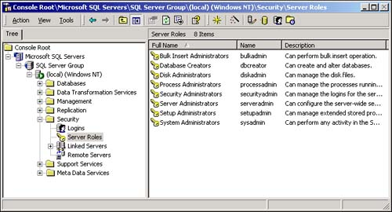
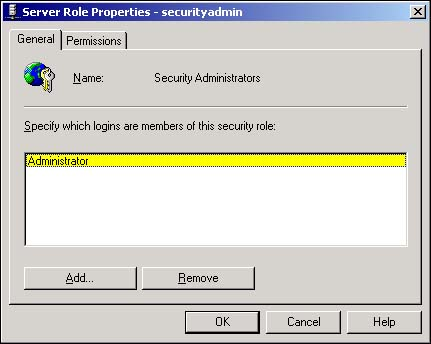
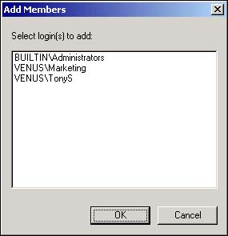

Managing a server database engine such as SQL Server can be a time-consuming process. Administrative tasks include backing up the data, adding new users, modifying tables and views, and so on. Most SQL Server administrators find it useful from time to time to permit other people to perform these tasks. Assigning other people tasks such as backing up the databases or administering security allows the system administrators to devote more time to other responsibilities.
As a system administrator, I am overwhelmed by the administrative tasks that are required to keep several databases operating efficiently. There's too much to do between database administration, adding new users, performing backups, and other tasks. I'd like to be able to allow an assistant to assume some of these responsibilities so that I won't have to be personally involved in performing these tasks.
However, I'm not looking forward to assigning various permissions to all of my administrative assistants. For instance, some people are to be designated as security administrators whereas others will be responsible for updating table designs.
SQL Server supports the notion of fixed server roles that define certain administrative profiles. Each fixed server role is accompanied by the appropriate permissions to perform the administrative tasks that are associated with the role.
Enterprise Manager provides all the dialog boxes that are necessary to assign user accounts to the fixed server roles that SQL Server recognizes.
It is important to note that each fixed server role is global within SQL Server. This means, for instance, that the dbcreator fixed server role is able not only to create new databases, but also to make changes to existing databases in SQL Server.
SQL Server recognizes eight fixed server roles:
sysadmin. This is the most powerful fixed server role. Members of this role are able to perform all the tasks included with the other roles.
serveradmin. The serveradmin role adjusts the serverwide settings in SQL Server, such as memory usage, authentication mode, and home directories.
setupadmin. This role administers linked servers. A SQL Server installation is able to share SQL Server databases that are located on other computers. The setupadmin group is responsible for creating links to SQL Server installations on other computers.
securityadmin. Members of the securityadmin role add new user and group logins, assign passwords, and perform other security-oriented tasks.
processadmin. This role manages processes that are spawned by SQL Server.
dbcreator. Members of this role are responsible for creating and altering databases.
diskadmin. The diskadmin role adjusts the disk space that is available for databases, sets the database growth increment (as a percent or in megabytes), and specifies the parameters for the SQL Server log file.
bulkadmin. SQL Server 2000 includes a number of statements intended to perform bulk inserts to data. Because the BULK INSERT statement can involve considerable amounts of processing time, SQL Server does not allow anyone other than members of the sysadmin and bulkadmin roles to perform this statement.
Often, you'll want individual users or groups of users to have database administrative responsibilities. For instance, you might want the accounting group to manage its own login names and passwords.
In this case, you'll want to join the users in the accounting group to certain fixed server roles, which are predefined special security groups. Each fixed server role defines a category of administrative tasks, and each member of a fixed server role is able to perform those administrative tasks.
SQL Server recognizes members of fixed server roles as people who are authorized to perform these administrative tasks. Each role is accompanied by the appropriate SQL Server permissions that are necessary to perform those tasks.
Open Enterprise Manager and expand the Security icon.
Click on the Server Roles icon to show the eight fixed server roles in the right pane (see Figure 11.12).

Right-click on any of the fixed server role entries and select Properties from the pop-up menu. Alternatively, select one of the fixed server roles and use the Properties command under the Action menu to open the Server Role Properties dialog box, as shown in Figure 11.13.

Use the Add button to open the Add Members dialog box (see Figure 11.14). The Add Members dialog box shows only those logins that have not already been added to the role. In Figure 11.14, only TonyS, the Marketing group, and members of the BUILTIN/Administrators group are not members of the securityadmin fixed server role.

Select the login to add to the selected fixed server role and click the OK button.
Membership in a fixed server role does not grant access to a database or data within the databases. Fixed server roles are intended for administrators and assistant administrators and do not automatically grant access to any of the data that SQL Server manages. Database object permissions (discussed later in this chapter in How-To 11.10) are required to gain access to data and database objects.
The special sysadmin role should be reserved for trusted and trained system administrators. Members of this role are able to perform all SQL Server administrative tasks, and those tasks are applicable to all databases that SQL Server manages. Obviously, this can lead to serious problems in the wrong hands.
Finally, when you add people to fixed server roles, make sure these people understand the consequences of their actions as system administrators. Because fixed server roles are global within SQL Server, the actions that fixed server role members perform could affect all the databases that SQL Server manages. Incorrectly configuring SQL Server or failing to carefully implement security can have a dramatic negative impact on every database that SQL Server manages.
Members of the SQL Server BUILTIN/Administrators group are automatically added to the sysadmin fixed server role.